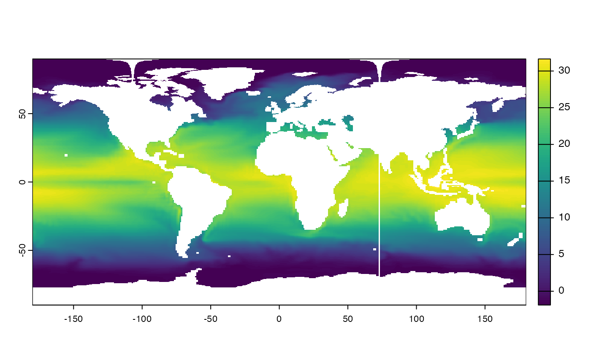

This vignette shows how you can download, wrangle, and process ESM data to calculate climate metrics. The idea is that the functions are independent of each other and can still perform their purpose without having to follow the entire workflow detailed below, from start to finish.
This code works for both monthly (mon) and daily
(day) climate data.
I would recommend creating a data folder, with the
following basic structure:
-
data/raw/: raw, untouched data -
data/raw/wget: downloadedwgetscripts -
data/raw/tos: raw ESM data (e.g., tos - sea surface temperature) -
data/proc/: processed ESM data -
data/proc/merged: merged files per model - 1 model per model/variable/scenario/frequency combination -
data/proc/sliced: sliced files depending on the required time period -
data/proc/yearly: yearly data (after converting monthly frequency to yearly frequency) -
data/proc/regridded: regridded data, standardizing grids of data -
data/proc/ensemble: ensemble mean/median for each variable/scenario/frequency combination
We will follow this folder structure throughout the vignette. It will still work with a different folder structure, just make sure you’re inputting the right paths.
Downloading ESM outputs
To download ESMs, you’d still have to download the wget
scripts from your chosen CMIP6 repository. I would suggest using: https://aims2.llnl.gov/search.
If you want to follow along, use the wget scripts that are in the
data/raw/wget folder. But, you can use other
wget scripts; just make sure to change the arguments.
Then, run the download_ESM function to run all the
wget scripts found in that folder.
base_dir <- "." # Just start relative to this location
htr_make_folder(file.path(base_dir, "data", "raw", "tos")) # make folder
htr_download_ESM(
indir = file.path(base_dir, "data", "raw", "wget"), # input directory
outdir = file.path(base_dir, "data", "raw", "tos") # output directory
)Merging files
We now merge files by model-variable-scenario-frequency combination.
htr_make_folder(file.path(base_dir, "data", "proc", "merged", "tos"))
htr_merge_files(
indir = file.path(base_dir, "data", "raw", "tos"), # input directory
outdir = file.path(base_dir, "data", "proc", "merged", "tos"), # output directory
year_start = 1985, # earliest year across all the scenarios considered (e.g., historical, ssp126, ssp245, ssp585)
year_end = 2100 # latest year across all the scenarios considered
)So this would result in just 1 .nc file for each
model-variable-scenario-frequency combination.
Adjust and reframe time periods
We now want to only keep the years we’re interested in. For example, we want to make sure that for future projections, we only want to look at 2020-2100.
htr_make_folder(file.path(base_dir, "data", "proc", "sliced", "tos"))
htr_slice_period(
indir = file.path(base_dir, "data", "proc", "merged", "tos"), # input directory
outdir = file.path(base_dir, "data", "proc", "sliced", "tos"), # output directory
frq = "Omon", # ocean, daily
scenario = "ssp",
year_start = 2020,
year_end = 2100,
overwrite = FALSE
)
#> [1] "ACCESS-ESM1-5_ssp126"
#> [1] "CanESM5_ssp126"Fix calendar periods (if needed)
This function fixes the calendar days, for days with leap years. This is to standardize the calendar across the different models.
htr_fix_calendar(indir = file.path(base_dir, "data", "proc", "sliced", "tos")) # will be rewritten
#> tos_Omon_ACCESS-ESM1-5_ssp126_r1i1p1f1_merged_20200101-21001231.nc does not have leap days
#> tos_Omon_CanESM5_ssp126_r1i1p1f1_merged_20200101-21001231.nc does not have leap daysChanging frequency of climate data
I created two functions: i) changes frequency to monthly
(monthly_frequency()), and ii) changes frequency to yearly
(yearly_frequency()), but because I’ve started with monthly
data here, I didn’t run monthly_frequency() here (but it
works).
htr_make_folder(file.path(base_dir, "data", "proc", "monthly", "tos"))
htr_change_freq(
freq = "monthly",
indir = file.path(base_dir, "data", "proc", "sliced", "tos"), # input directory
outdir = file.path(base_dir, "data", "proc", "yearly", "tos")
)Uncomment the code above if you’re using daily data and changing it to a monthly frequency.
htr_make_folder(file.path(base_dir, "data", "proc", "yearly", "tos"))
htr_change_freq(
freq = "yearly",
indir = file.path(base_dir, "data", "proc", "sliced", "tos"), # input directory
outdir = file.path(base_dir, "data", "proc", "yearly", "tos")
)This should create a new file that has a yearly frequency. For the rest of the analyses, I’ll only continue with the yearly data.
Regridding
The climate models have different grids, so now we need to regrid and
standardize the grid. This requires a base, empty raster that will be
made automatically in the regrid_esm().
htr_make_folder(file.path(base_dir, "data", "raw", "base_raster")) # create folder for base raster
htr_make_folder(file.path(base_dir, "data", "proc", "regridded", "yearly", "tos"))
htr_regrid_esm(
indir = file.path(base_dir, "data", "proc", "yearly", "tos"),
outdir = file.path(base_dir, "data", "proc", "regridded", "yearly", "tos"),
blankrast_dir = file.path(base_dir, "data", "raw", "base_raster"),
cell_res = 0.25,
layer = "annual"
)
#> [1] "ACCESS-ESM1-5 ssp126"
#> [1] "CanESM5 ssp126"Let’s try to plot this. Just plotting for the first time point and for the two models.
getwd()
#> [1] "/Users/eve067/GitHub/hotrstuff/vignettes"
models <- list.files(file.path(base_dir, "data", "proc", "regridded", "yearly", "tos"), full.names = TRUE)
model1 <- terra::rast(models[1])
plot(model1$tos_1)
Create ensemble
For now, we only have 2 models, but if you have more models, you just
need to input a list of the model names as a vector in the
model_list argument.
htr_make_folder(file.path(base_dir, "data", "proc", "ensemble", "mean", "tos"))
htr_create_ensemble(
indir = file.path(base_dir, "data", "proc", "regridded", "yearly", "tos"), # input directory
outdir = file.path(base_dir, "data", "proc", "ensemble", "mean", "tos"), # output directory
model_list = c("ACCESS-ESM1-5", "CanESM5"), # list of models for ensemble
variable = "tos", # variable name
frequency = "Omon", # original frequency of data
scenario = "ssp126", # emission scenario
mean = TRUE
) # if false, takes the medianThen, we plot to see how it looks.
ensemble_model <- list.files(file.path(base_dir, "data", "proc", "ensemble", "mean", "tos"), full.names = TRUE)
ensemble <- rast(ensemble_model)
plot(ensemble$tos_1)